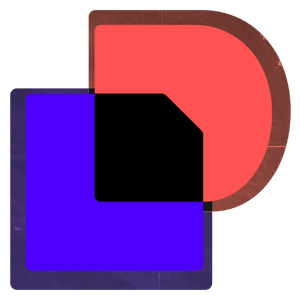
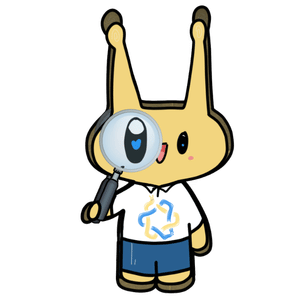
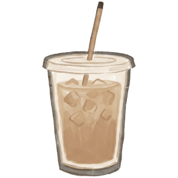

who am i
I am a .
I’m interested in the intersection of software, AI, security, and social impact. I love building technology that solves real-world problems!
I am a .
I’m interested in the intersection of software, AI, security, and social impact. I love building technology that solves real-world problems!
Currently, I'm pursuing a B.S. in Computer Engineering at UC Santa Cruz, graduating in June 2027. Go Slugs!


I'm joining Sandia National Laboratories as a Software Engineering Intern in the Security Information Systems Group, working at the intersection of infrastructure, software, and national security.
During my time with the FBI, I worked on technical research and analysis spanning AI-generated image forensics, photogrammetry, and data-driven investigative problems.
At Docusign, I worked across production software systems: building microservices, analyzing logs, and supporting reliable releases across multiple environments.
At UCSC Blueprint, I'm both a developer and Co-President, building technology for nonprofit partners while helping lead the organization behind the scenes.
Outside engineering, I help run THub Cafe, our family-owned café. I've worked across operations, marketing, revenue strategy, events, and even developing new drinks. It's where I learned that I enjoy building businesses just as much as I enjoy building software.

Outside work, I love trying new cafés, experimenting with drink recipes, traveling with friends and family, and being outdoors!
For more details about my experience, please download the pdf version!